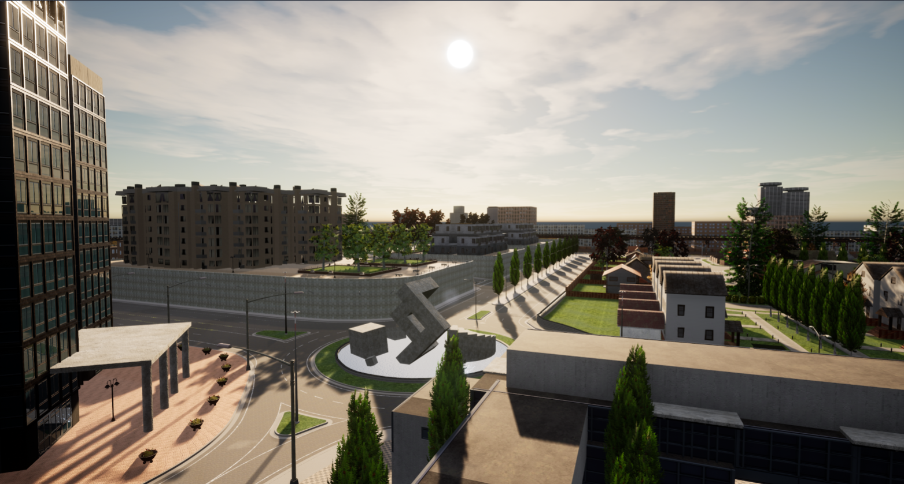
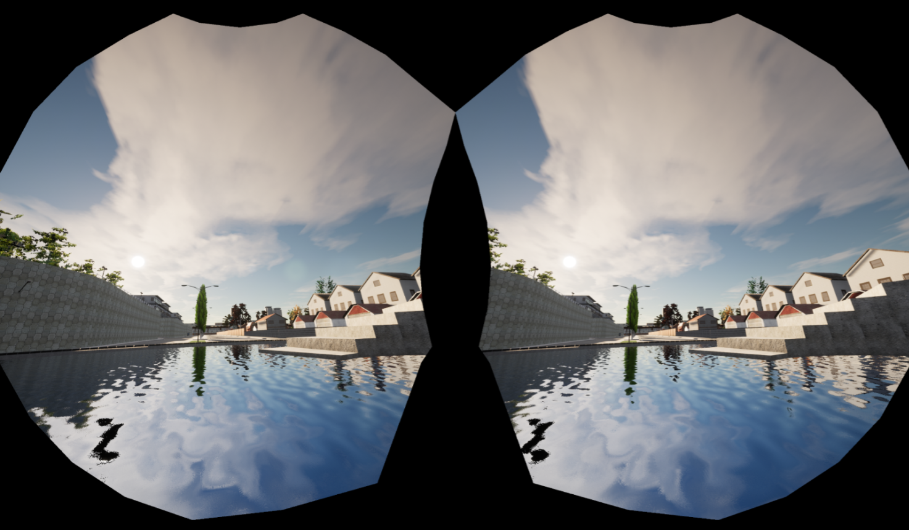
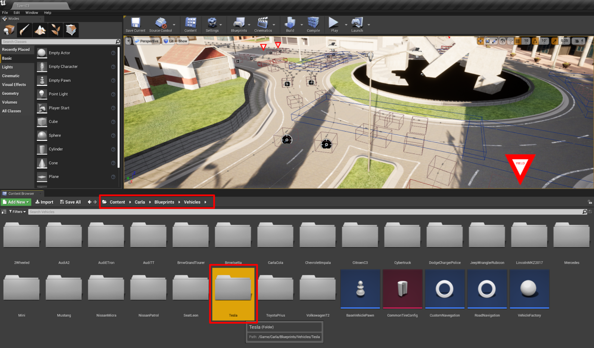
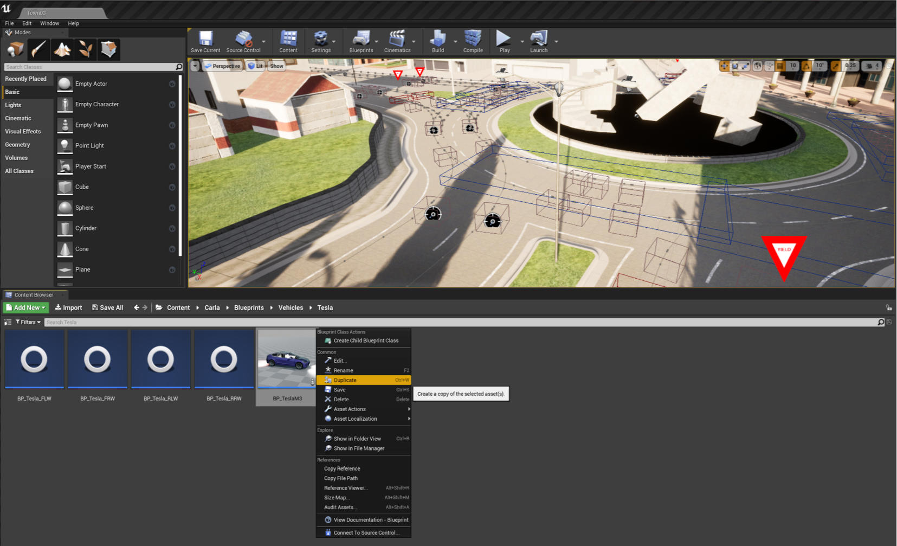
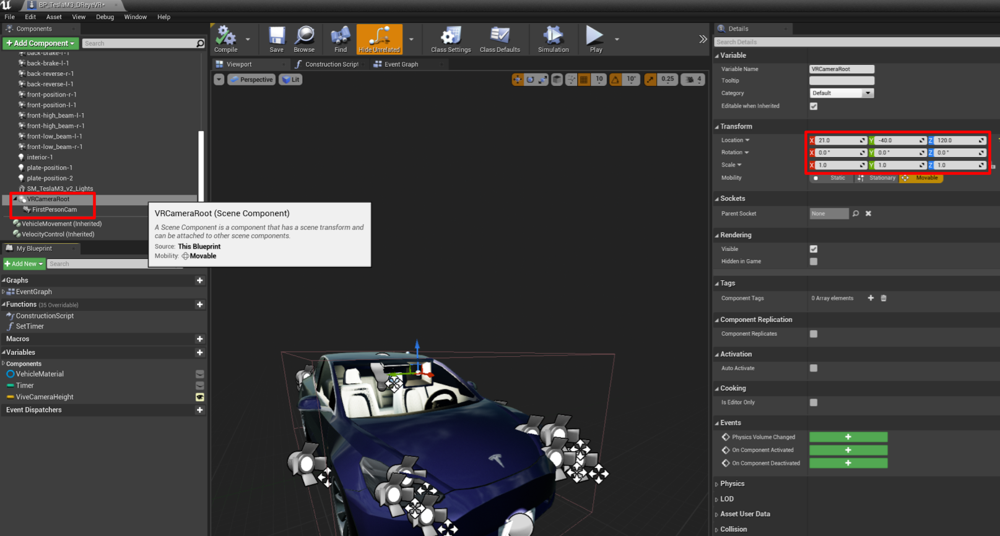
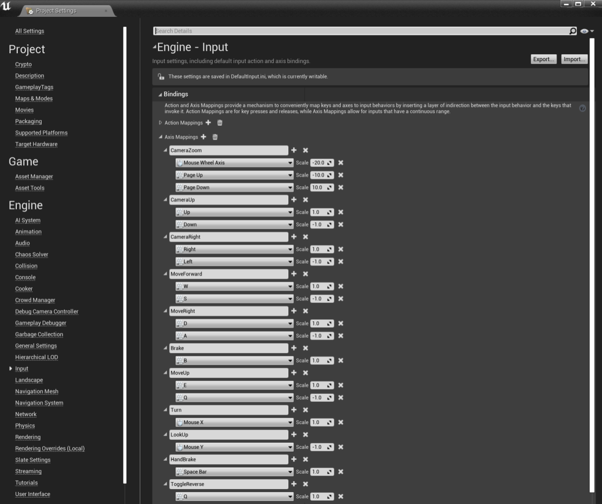
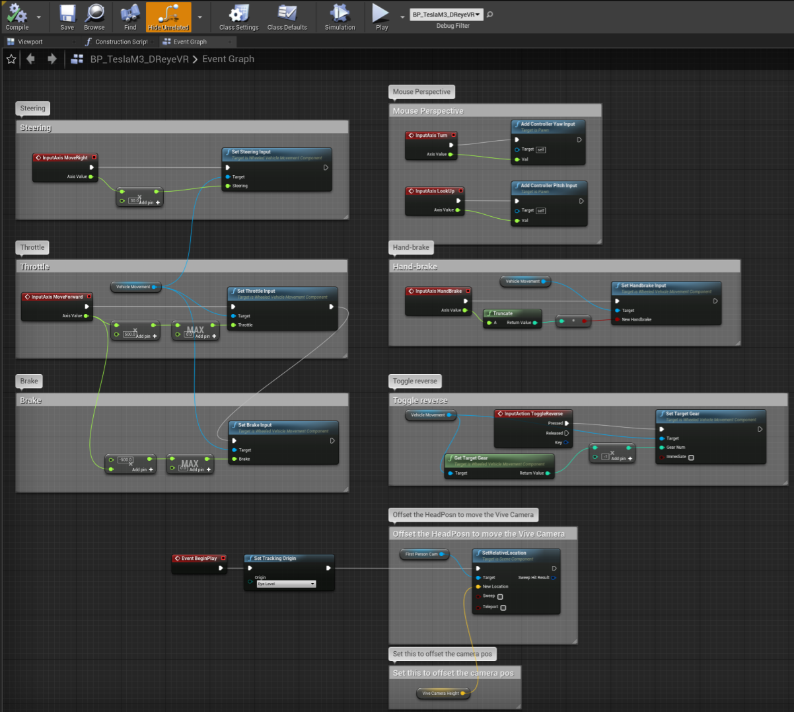
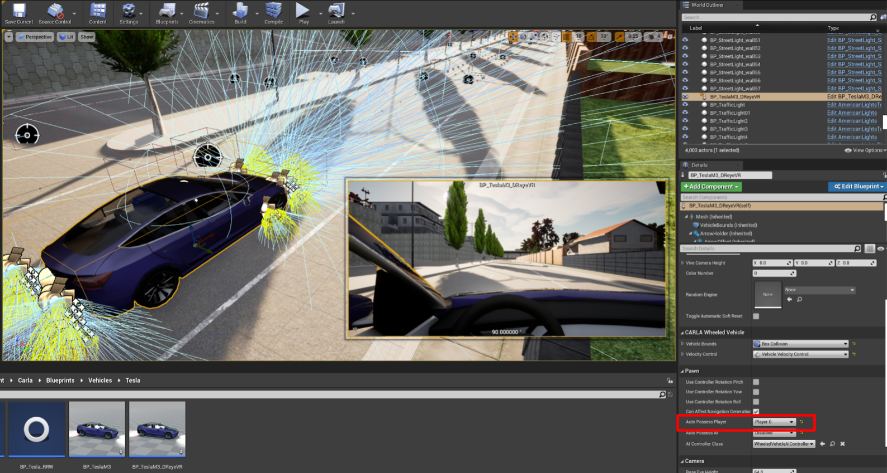
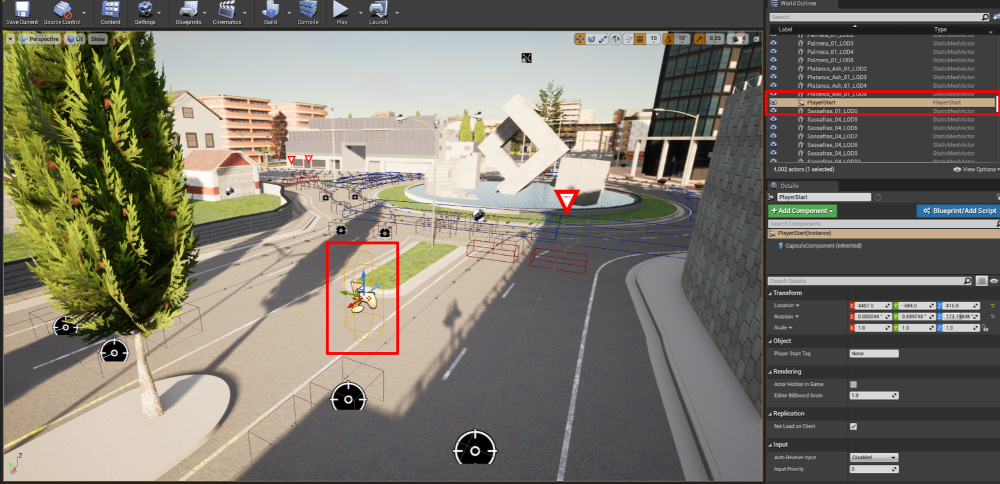

配置可驾驶的 VR 玩家
先决条件
我们需要安装并确保 VR 模式功能完备，请参阅 VR-mode.md。
默认的客户端-服务器（模拟器）会将你以“观察者(Spectator)”身份生成。这意味着你默认处于“穿墙”（no-clip）模式，可通过 WASD 键和鼠标进行控制。
默认的穿墙观察者模式

此外，当以-vr 模式运行此服务器时，我们会出生在默认的中心位置，且没有动作控制，仅支持摄像机移动：
默认的 VR 观察者模式

如果仅使用外部客户端，这样做是可以的。然而，由于我们需要一个支持 VR 控制的玩家角色，且服务器端（UE4）也支持 VR，因此我们需要在服务器内生成该玩家角色。
在模拟器中创建自定义玩家
首先，若要在 Carla 模拟器的 VR 实例中创建一辆可驾驶的车辆，我们需要选择一款车辆模型。
I. 查找车辆模型
Carla 在 Content/Carla/Blueprints/Vehicles 路径下提供了多种载具参与者的蓝图。本教程以 Tesla Model 3 为例，但该方法同样适用于其他任何车辆蓝图。

II. 创建新的载具蓝图
最简单的方法是复制您想要使用的现有载具蓝图并重命名。在本指南中，我们将该车辆重命名为 BP_TeslaM3_DReyeVR。

III. 添加第一人称摄像机与 VR 根节点
首先，我们需要双击上一节中创建的 BP_TeslaM3_DReyeVR 文件，这将打开一个新的蓝图窗口（如下图所示）。默认情况下，窗口会以“事件图表”（Event Graph）视图打开，但我们目前需要在“视口”（Viewport）区域进行操作。
-
首先，我们需要点击绿色的“+Add Component”（添加组件）按钮，添加一个附加在主骨架网格体组件（作为其子组件）上的 Scene 组件。
-
你可以随意为该组件命名；为了清晰起见，我们将其命名为
"VRCameraRoot"。后续我们无需引用此组件。 -
在这里，你可以将这个
VRCameraRoot组件拖放到车辆模型周围。由于我们需要将其放置在驾驶员座椅的位置，因此将其相对于车辆的坐标设为X:21.0, Y:-40, Z:120。 -
接下来，我们需要创建一个摄像机组件并将其附加到
VRCameraRoot上。你可以随意为该组件命名，但请注意，后续步骤中需要引用它。我们将它命名为"FirstPersonCam"。 -
请注意，将此组件附加到
VRCameraRoot后，摄像机会继承其位置，因此无需更改摄像机的 Transform（保持 {0, 0, 0} 即可）。 -
此外，若要将摄像机的相对位置锁定在载具上（而非世界坐标系），务必确保未勾选
Camera Options > Use Pawn Control Rotation。此设置会暂时禁用鼠标控制，但这完全符合我们的 VR 需求。- 如果勾选此选项，鼠标将能够控制 VR 模式和 2D 模式下的摄像机位置。不过，在 VR 模式下，驾驶车辆向任意方向移动时，摄像机视角并不会随之同步转动；这意味着你需要转动现实生活中的头部来配合车辆的转向，这种体验并不理想。

IV. 向场景中添加控制输入
既然已将摄像机附加到 Actor（角色/对象）上，我们需要一种方式，以便在模拟器的 VR（或非 VR）模式下控制该载具。
返回主编辑器窗口，点击“设置”（Settings）>“项目设置”（Project Settings），即可打开“项目设置（Project Settings）”窗口，在此处我们可以添加自定义输入事件。
在左侧导航栏中，进入“输入”（Input）>“绑定”（Bindings），界面应如下图所示。随后，你可以添加类似于我们示例的轴映射（Axis Mappings），从而将键盘和鼠标输入引入场景中。
对于我们简单的载具控制，我们将使用以下按键绑定：
W: 油门/加速A: 左转S或B: 刹车D: 右转Q: 切换倒档Space: 保持手刹状态
注意
某些控件具有负缩放比例。
例如，如果将Mouse Y设置为 +1，会导致鼠标视角控制反转。

V. 在事件图表中编写控制方案
为了让 UE4 能够接收并实际使用这些输入，我们需要明确哪些输入对应哪些操作。这可以通过蓝图窗口中的“事件图表”（Event Graph）来实现。
请注意，若要创建节点（block），只需在窗口中右键点击并搜索相应的节点即可。按照控制方案中关键机制的顺序，具体步骤如下：
-
鼠标视角 - 为了实现正确的鼠标移动效果，我们需要将“转向（Turn）”输入（鼠标 X 轴）用于
ControllerYawInput，并将“上下查看（Lookup）”输入（鼠标 Y 轴）用于ControllerPitchInput。 -
VR 视角 - 我们需要使用“眼平模式（Eye Level）”（坐姿）下头显的“追踪原点”（Tracking Origin）作为触发
SetRelativeLocation的依据。该原点已锁定至前文提到的FirstPersonCam（见第三部分），并可通过“摄像机高度（Camera Height）”向量进行偏移（在本例中，该向量为 {0, 0, 0}，因此无需偏移）。 -
转向 - 我们可以利用
MoveRight来处理这一操作：将其数值放大 30 倍后传入SetSteeringInput。由于A键对应负值，因此按 A 键会向左转向，而按D键则向右转向。 -
油门 - 我们首先将
MoveForward的输出放大 500 倍，并将其限制在 [0, +∞) 范围内，从而仅利用W键实现向前加速。 -
刹车 - 我们将采用
MoveForward的同一输出，将其缩放为 -500（即反向），并将其限制在 [0, +∞) 范围内，以此作为制动值S。 -
切换倒挡 - 对于“切换倒挡”（ToggleReverse）功能，我们应使用“输入动作”（InputAction）而非“输入轴”（InputAxis）；具体做法是，当触发按下动作时，调用
SetTargetGear函数，从而在正常挡位与倒挡之间进行切换。 -
（可选）手刹 - 我们可以直接获取“手刹”（HandBrake）输入（空格键），并将其传递给
SetHandbrakeInput函数。这并非必要，仅为示例，因为我们已经有了刹车机制。
最终，您的事件图应该类似于这样：

VI. 将参与者放置到场景中并使用它
至此，该 Actor 应已制作完成并可驾驶；最后一步是将我们新建的 BP_TeslaM3_DReyeVR 蓝图放入场景中。只需将该蓝图拖放到地图上即可完成此操作。
将 Actor 放置到场景中并选中它后，你应该能看到摄像机视角——该视角应位于驾驶座位置！
接下来，进入右侧的“细节”（Details）面板，搜索“Auto Possess Player”（自动占有玩家）。将其设置从“Disabled”（禁用）更改为“Player 0”（玩家 0），这样观察者（Spectator）就能按预期直接生成在驾驶座上。
参考截图：

重要
移除旧的出生点：最后一步是移除地图中现有的 SpawnPlayer 组件。例如，在默认的 Town03 地图中，Carla 默认将玩家放置在此处。
- 删除该出生点后，服务器将默认把玩家放置在
BP_TeslaM3_DReyeVR蓝图中。

至此，你应该已经在 VR 驾驶模拟器中拥有了一个功能完备的玩家/观察者角色！